Andalusia
Arcos de la Frontera

MAN IN A SUITCASE: Night Flight to Andorra (Freddie Francis: December 1967)
Establishing footage of Andorran Town nestling in the Pyrenees.
(Identified by Sietse Postma, May 2022)
Cádiz
Plaza de la Catedral (was Plaza De Pio XII)

DANGER
MAN: The
Man with the Foot (Jeremy Summers: 1966)
John Drake goes to meet Derringham at a cafe in Olot, the local town.
(Identified by David Wilson, March 2021)
Plaza De San Juan de Dios
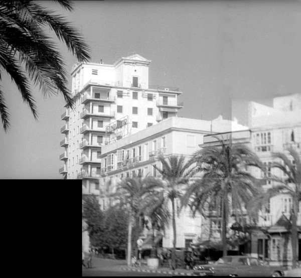
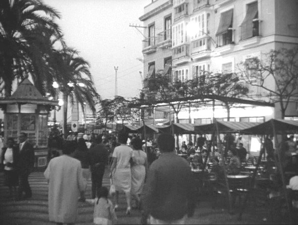
THE SAINT: The Death Penalty (Jeremy Summers: April 1964)
Simon Templer checks into his hotel in Marseille.
DANGER MAN: Yesterdays Enemies (Charles Crichton: 1964)
Location of Brett’s Beirut office.
(Identified by Geoff Dodd, May 2023)
DANGER MAN:
The Battle
of The Cameras (Don Chaffey:
1964)
Drake’s Hotel in the South of France.
THE SAINT: The Spanish Cow (John
Gilling: April 1965)
The hotel where Simon is staying in the South of France (Diario De
Cádiz). Later Arroyo discusses his plans with his comrades at a bar
(Cervecería Nueva Ola).
(Spotted by Geoff Dodd,
May, 2023)
Málaga
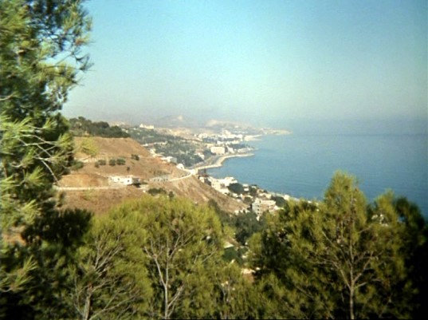
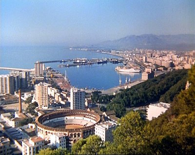
DEPARTMENT S: The Treasure Of The Costa Del Sol (John Gilling: September 1968)The Costa del Sol July 31st Two Americans, Thorn and Cal, are driving on the Costa del Sol towards the Punta de Molino headland (Parador Nacional from Camino de Gibralfaro). Much later Stuart and Annabel drive to Camilo's house posing as American tourists (Parque Baños del Carmen from Camino de Gibralfaro).
THE PERSUADERS!: Nuisance Value (Leslie Norman: 1971)
Establishing shots for Spain.
(Spotted by Paul Stroud, November 2009)
Hotel Riviera, Avda Antonio Machado, Benalmadena Costa
DEPARTMENT S: The Treasure Of The Costa Del Sol (John Gilling: September 1968)
Jason is sent to the Hispano Hotel, Torremolinos to lie low (swimming pool only).
(Identified by Peter Day, 19th August 2010)
Torremolinos (redeveloped)
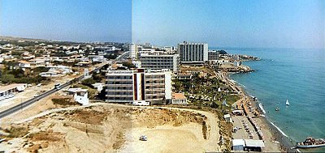
DEPARTMENT S: The Treasure Of The Costa Del Sol
(John Gilling: September 1968)
Jason King goes Marbella to talk to Anita about Thorn at her hotel
(Triton Hotel, Torremolinos). Later Jason King is sent to Torremolinos
to lie low (establishing shots of shopping streets).
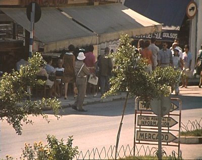
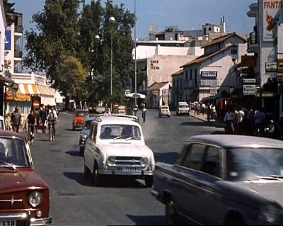
The Balearic IslandsHotel Gran Melia Victoria, Palma de Majorca
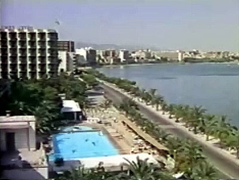
THE BARON: And Suddenly You're Dead (Cyril Frankel: January 1966)
Kruger stalks the corridors of Cordelia’s Swiss hotel at night and attempts to break into her room.
THE SAINT: The Death Game (Leslie Norman: November 1966)
Simon Templar is taken to the university to meet Bill Bast.
Hotel Mediterráneo (closed), Av. de Gabriel Roca, Palma de Mallorca
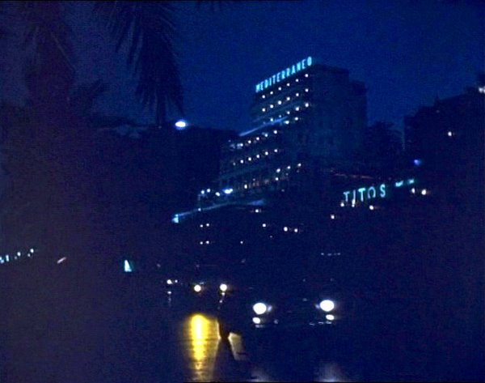
THE BARON: Long Ago and Far Away (Robert Asher: March 1966)
Establishing of South America where Cordelia is meeting with adveturer, Ramon Petrarca.
Hotel Nixe Palace, Avenida Joan Miró, Palma de Mallorca
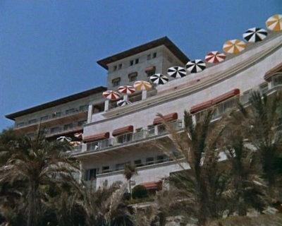

THE BARON: Night of the Hunter (Roy Baker: July 1966)
Cordelia waits at the Baron’s hotel while Mannering is keeping his appointment at the Temple of Mithras.
(Identified by Paul Stroud, June 2015)
THE CHAMPIONS: Get Me Out of Here! (Cyril
Frankel: )
Professor Anna Maria Martes prepares to leave her hotel to fly back to
the United States.
DEPARTMENT S: The Treasure Of The Costa Del Sol
(John Gilling: September 1968)
Jason returns to his hotel to find Sullivan in his bed.
DEPARTMENT S: Death on Reflection (Ray
Austin: 1968)
Jason King is on a Pacific island doing research.
RANDALL AND HOPKIRK
[DECEASED]: The Ghost
Who Saved the Bank at Monte Carlo (Jeremy Summers: June
1969)
Establishing shot of Monte Carlo Hotel.
JASON KING: Flamingoes only Fly on Tuesdays
(Seremy Summers: 1970)
Carribean Beach
(Identified by Paul Stroud, January 2016)
Begur

THE PROTECTORS:
The Numbers Game (Don
Chaffey: Summer 1971)
Harry (Robert Vaughn) follows Pepe back to his bar after he has planted
drugs on his car. From then on he and The Contessa (Nyree Dawn Porter)
haunt the bar (Carrer de Bonaventura Carreras). Harry (Robert Vaughn)
watches Susan Crediton (Margareta Lee) from the hotel (The Vintage
Hotel, Cap sa Sal) with binoculars. He is joined by The Contessa (Nyree
Dawn Porter). After leaving for her rendezvous she is brought back to
Harry and the Contessa by Carter (Sherwood Price).
Films:
SOME GIRLS DO (1969)
Carrer del Sant Pere
THE PROTECTORS:
The Quick Brown Fox
(Don
Chaffey: Summer 1971)
Chino (Anthony Chinn) lurks outside the offices of Osina’s Typewriter
business waiting for Harry.

Carrer del Sant Pere Roundabout just outside old town
THE PROTECTORS: The Quick Brown Fox (Don
Chaffey: Summer 1971)
Keller’s men, in a van, follow The Contessa and Harry as they leave
Osina’s.
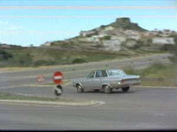
Carrer del Sant Pere, Ermita de Sant Ramon

THE PROTECTORS:
The Quick Brown Fox
(Don
Chaffey: Summer 1971)
Keller’s men, in a van, follow The Contessa and Harry as they leave
Osina’s.
Films:
SUDDENLY LAST SUMMER
(1959)
SEA FURY (1958)
Carrer del Sant Pere, Plaça Església
THE PROTECTORS:
The Quick Brown Fox
(Don
Chaffey: Summer 1971)
Chino intercepts Keller’s mail.

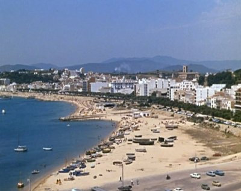
THE CHAMPIONS: The Iron Man (John Moxey: June
1967)
Establishing shot of a coastal town in the Costa Brava.
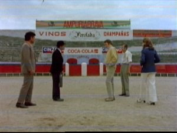
THE PROTECTORS:
Brother Hood (Don
Chaffey: Summer 1971)
Harry (Robert Vaughn) and The Contessa (Nyree Dawn Porter) take Sandor
Karoleon to a bullfighting arena (La Plaza de toros de Figueras,
Carrere del Far, unused since 1989) to hand him over to Heller (John
Cazabon).
THE PROTECTORS:
Brother Hood (Don
Chaffey: Summer 1971)
Harry Rule (Robert Vaughn) arrives at Girona Airport and is met by
Heller (John Cazabon). As they leave the Contessa (Nyree Dawn Porter)
places a homing device ion the ground to be picked up by Harry. Hiller
drives off with Harry in the back of a Rolls Royce.
THE PROTECTORS:
The Quick Brown Fox
(Don Chaffey: Summer 1971)
Harry Rule (Robert Vaughn) arrives at the airport to catch a plane to
Geneva.
THE PROTECTORS:
Brother Hood (Don
Chaffey: Summer 1971)
Heller drives past Girona with Harry in the back of a Rolls Royce.
There is a motorcycle escort to prevent anyone following.
THE PROTECTORS:
Brother Hood (Don
Chaffey: Summer 1971)
The Contessa (Nyree Dawn Porter) and Yanos (Antony Stamboulieh) arrive
at the prison where Sandor Karoleon is being held.
THE
PROTECTORS: Disappearing Trick (Jeremy Summers: Summer 1971)
After managing to evade Harry, The Contessa and Brad Huron leave Paris for where?
(Identified by Sietse Postma, August 2023)
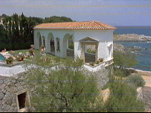
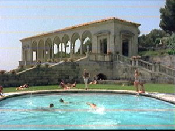
THE PROTECTORS:
The Quick Brown Fox
(Don Chaffey: Summer 1971)
Villa on the Carrer de la Verge de Montserra, S'Agaró, Spain - Hans
Keller (Morris Perry) greets The Contessa (Nyree Dawn Porter) as she
enters the recreation area of his villa by the sea (can be seen from
Cami de Ronda footpath).
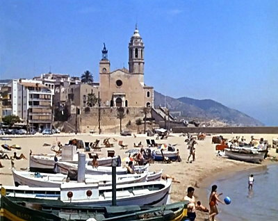
THE CHAMPIONS: The Iron Man (John Moxey: June
1967)
Shot of beach and church to establish the location of El Caudillo's
villa.

THE SAINT:
English Lady Takes Lodgers (Michael
Truman 1965)
The Portuguese home of George and Emma Stanway (La Musclera,
Palafrugell).
(Identified by Geoff Dodd, May 2023)
CHASE A CROOKED SHADOW (1958)


THE PROTECTORS:
Brother Hood (Don
Chaffey: Summer 1971)
Harry is driven up to the gates of Bela Karoleon’s villa (Castell del
Voevodsky at Jardí Botànic Cap Roig, Cap Roig, Palafrugell).
THE PROTECTORS: The Quick Brown Fox (Don
Chaffey: Summer 1971)
Spanish villa being used by The Contessa (Jardí Botànic Cap Roig ticket office and entrance to the gardens). Later,
Harry (Robert Vaughn) follows the car that picks the bar owner up and
arrives at a villa (Castell del Voevodsky)
(Identified by Sietse Postma, February 2025).
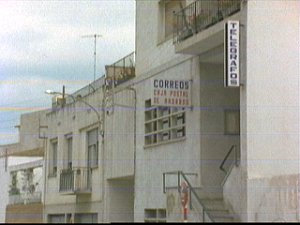
Post Office, Palafrugell
THE PROTECTORS:
The Quick Brown Fox
(Don
Chaffey: Summer 1971)
The Contessa visits the local post office (redeveloped) to arrange for
a letter to be sent with the previous day’s date.
(Identified by Nik Duserm, June 2020)
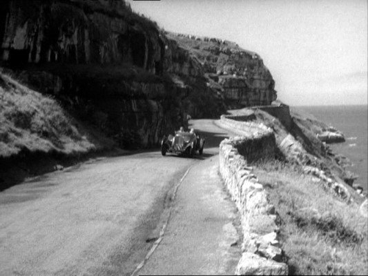
THE SAINT: The Death Penalty (Jeremy Summers: April 1964)Toby Haildon races throungh the mouintains above Marseilles in his sports car with Laura Stride, a very unwilling passenger(Costa Brava Coastline road view between Tossa de Mar and San Feliu de Guixols at Rosamar, footage from CHASE A CROOKED SHADOW (1958).
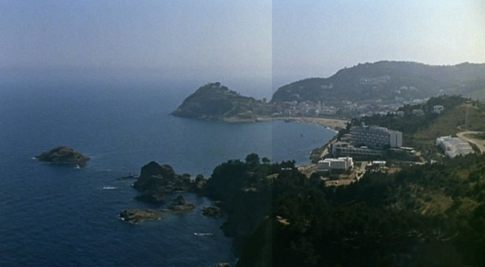
THE CHAMPIONS: The Iron Man (John Moxey: June 1967)Shot of coast and hotel (Gran Hotel Reymar, Tossa de mar) to establish the location of El Caudillo's villa.
Film:
CHASE A CROOKED SHADOW (1958)
The Canary IslandsGran Canaria
THE SAINT: The Saint Bids Diamonds (Leslie
Norman, April/May 1965)
Simon and Madame Calliope are at the airport (Las Plamas Airport)
awaiting the arrival of George Felson.
Plaza de Cibeles
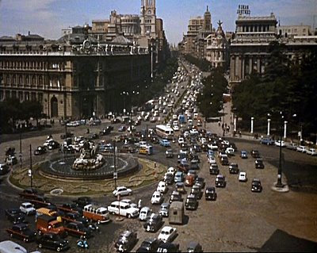
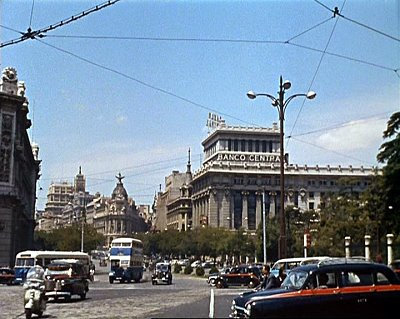
DEPARTMENT S: The Treasure Of The Costa Del Sol (John
Gilling: September 1968)
Jason King goes Madrid to talk to Estelle about Thorn and Cal and who
they were associating with.
DEPARTMENT S: Who Plays the Dummy? (John
Gilling: Autumn 1968)
Jason King goes undercover in Madrid to keep an eye on Gilford’s
operation.

THE PROTECTORS:
Quin (Don Leaver: 1972)
The Contessa (Nyree Dawn Porter) waits (in the Mercado de San
Miguel) for Harry to emerge. When he does she hails a taxi
(from the steps of the Mercado) as Harry is driven away but loses him
as his car circumnavigates the Plaza de San Miguel and disappears along
the Calle del Conde de Miranda.
(Identified by Paul Stroud, June 2009)


THE PROTECTORS:
Quin (Don Leaver: 1972)
Harry Rule (Robert Vaughn) is lead down some steps from the Plaza Mayor
(Calle de los Cuchilleros) then along a road (Calle Cava de San Miguel)
and through a door his is followed by The Contessa (Nyree Dawn Porter).
(Identified by Paul Stroud, June 2009)

THE PROTECTORS:
Quin (Don Leaver: 1972)
Harry Rule (Robert Vaughn) is at a pavement café trying to make contact
with Quin.
(Identified by Paul Stroud, June 2009)


THE PROTECTORS:
Quin (Don Leaver: 1972)
The Contessa (Nyree Dawn Porter) visits the The Rastro Market looking
for her contact. Later Paul Buchet (Tony Anholt) looks for the same
man.
(Identified by Paul Stroud, February 2010)
THE PROTECTORS:
Quin (Don Leaver: 1972)
Looking for Quin, Harry Rule (Robert Vaughn) is taken by taxi to a bull
ring.
(Identified by Paul Stroud, June 2009)
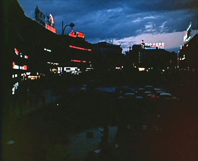
MAN IN A SUITCASE:
Variation on a Million Dollars Part
2
(Pat Jackson: November 1966)
After escaping from the ship’s crew McGill makes his way on foot to
Lisbon.
THE CHAMPIONS: Get Me Out of Here! (Cyril
Frankel: )
Establishing night-time shot of the square where Sharron Mcready and
Craig Sterling wait at a café for Richard Barrett.
DANGER MAN: The Outcast (Michael Truman:
1964)
Establishing shots Gibraltar on the night of the murder as well as John
Drake flying in to investigate.

DANGER MAN: The Sisters (Seth Holt: 1959)
Gerda Sandor is held in a Slavosk prison.
(Spotted by Paul Stroud, March 2014)
Toledo
Tembleque
Plaza Orden
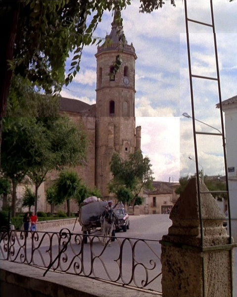
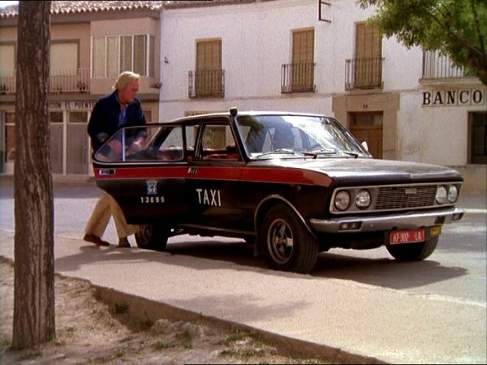
RETURN OF THE SAINT: The Nightmare Man (Peter Sasdy: July 1977)
Once he gets his contract, Gunther (Joss Ackland) makes prepartions to travel to London. He visits his bank and travels to a hotel by taxi to avoid detection.
(Identified by Erik Schoep, April 2021)
Return to Index